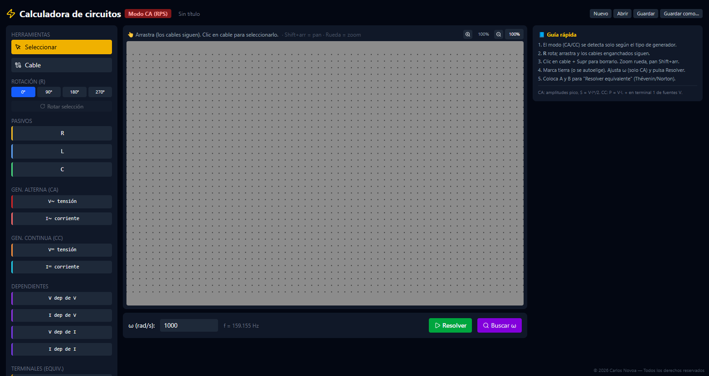

La herramienta de escritorio que los ingenieros y estudiantes de electrónica necesitan. Rápida, precisa y sin conexión.
Descargar versión más reciente
Gratuita · Ver todas las versiones ↗
Resuelve redes de corriente y tensión con KCL y KVL de forma automática.
Divisores de tensión y corriente, filtros RC, RL y RLC con respuesta en frecuencia.
Trabaja con valores numéricos o simbólicos y exporta las expresiones resultantes.
Visualiza señales, curvas de transferencia y diagramas de Bode sin salir de la app.
Arrastra, conecta y calcula — sin configuración previa.

Sí, 100% gratuita. Sin suscripciones, sin anuncios, sin límites.
No. Funciona completamente sin conexión una vez instalada.
Sí. Se distribuye desde GitHub. Windows puede mostrar SmartScreen la primera vez — clic en “Más información” y luego “Ejecutar de todas formas”.
Circuitos CA y CC con R, L, C y fuentes independientes y dependientes. También calcula Thévenin y Norton.
Sí. Las actualizaciones se publicarán aquí. Escríbeme a jotashan1919@gmail.com para estar al tanto.
¿Tienes dudas, sugerencias o encontraste un bug? Escríbeme.
✉ jotashan1919@gmail.com